Verkeersborden: officiële RVV 1990-afbeeldingen van Wikimedia Commons (Road signs of the Netherlands), lokaal in img/signs/.
| Code | Bestand (Commons) | Licentie | Maker | |
|---|---|---|---|---|
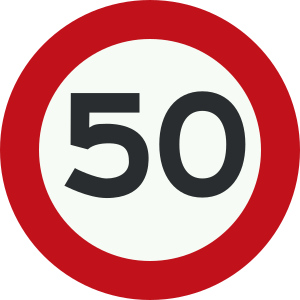 | A1-50 | Nederlands verkeersbord A1.svg | Public domain | |
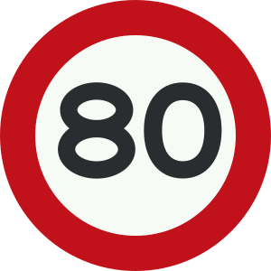 | A1-80 | eigen tekening naar RVV bijlage 1 (bord A1, 80): afgeleid van Commons-bestand Nederlands verkeersbord A1.svg; cirkel, rand, kleur en cijfer 0 ongewijzigd, alleen het cijfer 8 nagetekend | eigen werk | TVT Krijger (geen AI), op basis van Commons-bestand van Bouwe Brouwer (publiek domein) |
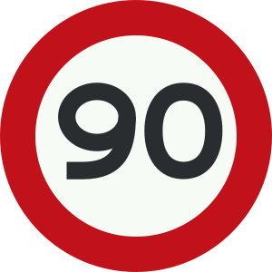 | A1-90 | eigen tekening naar RVV bijlage 1 (bord A1, 90): afgeleid van Commons-bestand Nederlands verkeersbord A1.svg; cirkel, rand, kleur en cijfer 0 ongewijzigd, alleen het cijfer 9 nagetekend | eigen werk | TVT Krijger (geen AI), op basis van Commons-bestand van Bouwe Brouwer (publiek domein) |
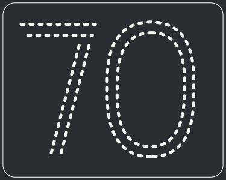 | A3 | Nederlands verkeersbord A3.svg | Public domain | SVG version by Bouwe Brouwer |
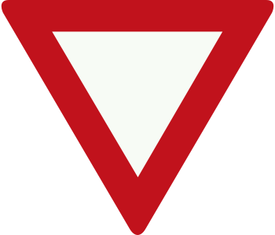 | B6 | Nederlands verkeersbord B6.svg | Public domain | SVG version by Bouwe Brouwer |
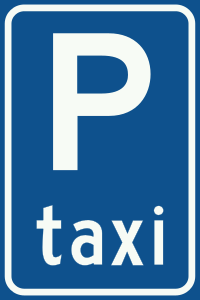 | E5 | Nederlands verkeersbord E5.svg | Public domain | SVG version by Bouwe Brouwer |
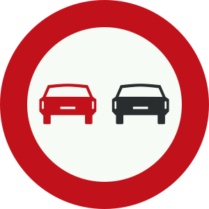 | F1 | Nederlands verkeersbord F1.svg | Public domain | SVG version by Bouwe Brouwer |
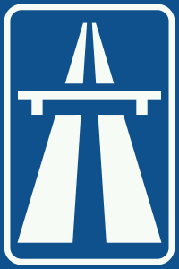 | G1 | Nederlands verkeersbord G1.svg | Public domain | SVG version by Bouwe Brouwer |
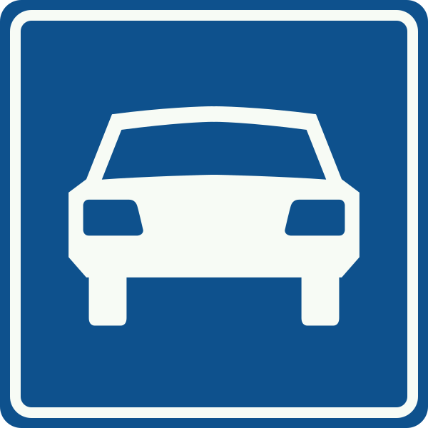 | G3 | Nederlands verkeersbord G3.svg | Public domain | SVG version by Bouwe Brouwer |
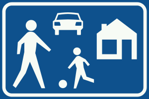 | G5 | Nederlands verkeersbord G5.svg | Public domain | SVG version by Bouwe Brouwer |
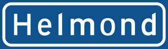 | H1 | Nederlands verkeersbord H1.svg | Public domain | SVG version by Bouwe Brouwer |
Foto-examenbeelden (img/foto/*.jpg): AI-beelden (abonnement) in CBR-stijl, elk beeld handmatig gekeurd op vervorming, richtingaanwijzer, spoor, verzonnen borden en weggeefdetails; afgekeurde beelden opnieuw gemaakt of weggelaten. Verkeersborden zelf blijven officiële Commons-afbeeldingen. Situatieschetsen (img/q/*.svg): eigen schematische tekeningen.
Nieuw in deze versie: 4 beelden vanaf de bestuurdersstoel (img/r13/r13-*.jpg), AI-beeld, handmatig gekeurd.